Five marks from your references. Pick one or two to develop.
Twelve generations, prompted from the horse, the S taxi, HBO and the fintech moodboard: heavy even strokes, soft bends, one idea each. The reference logos were described in words, not fed in as images, so the models could not copy them. Every mark is cut from the raw output and recoloured to exact Signal, so the 16px tests are real downsamples. Ordered strongest first.
FM with a full stop
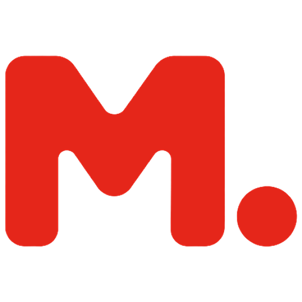
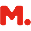
32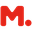
16For
The strongest mark in the batch. Heavy, soft and simple, and it survives 16px untouched. The dot gives it a point of view: a full stop, and a small fulcrum if we want the leverage story.
Against
The "letter plus dot" format is Klarna's move, so it needs its own detail before it is ours. The M itself is close to a stock rounded bold.
DLocked ML monogram
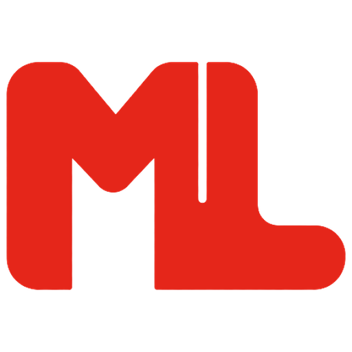
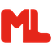
32For
The only mark that carries both initials. Heavy and compact like HBO, with one hairline cut as the detail. Reads well at 32px and holds its shape at 16px.
Against
The hairline cut disappears at 16px, and the rounded L foot is the only soft moment in a very square mark. It reads more as type than symbol.
BRising arches
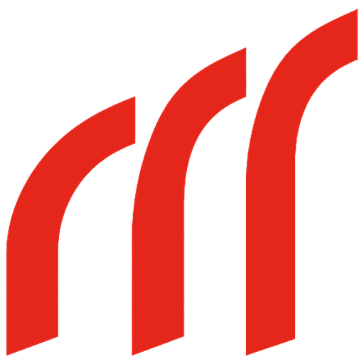
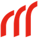
32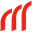
16For
Closest to the horse reference: one stroke weight, rhythm, angled cuts, momentum. It feels drawn by a person and is unlike anything on the moodboard.
Against
It reads as a lowercase m, or "rrr", more than a capital M. It needs a firmer first leg to anchor the letter.
CContinuous ribbon M
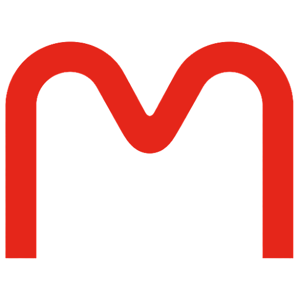
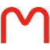
32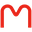
16For
The friendliest option, and the clearest continuous curve. It has Nubank's softness and sits naturally beside Host Grotesk.
Against
Stroke is thin for a symbol and the idea is only "soft M", so it risks being generic. It would need more weight and one distinctive move.
BNMane wave

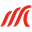
16Maximum LeverageMaximum LeverageFor
The only mark with real motion, and the strongest echo of the horse mane. Distinctive at large sizes.
Against
The M is weak: it reads as a wave or a sports swoosh first. The stripes merge at 16px, and the original had a slight gradient, flattened here.
Cut
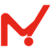
A · lever MThe lever became a tick: reads as "M!" or a checkmark.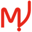
A NB · lever MReads as "MJ!" The hook and dot fight the letter.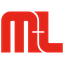
D NB · ML monogramThe crossbar makes "M+L", and it came out with a gradient.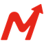
E · forward arrowThe rising arrow is the stock-trading cliché.- G · M in a circleToo busy: the arrow inside the M is lost below 32px.
- G NB · M in a circleReads as a metro or underground station sign.
- H · momentum pixelsThe pixel trail disappears at 16px and the idea goes with it.